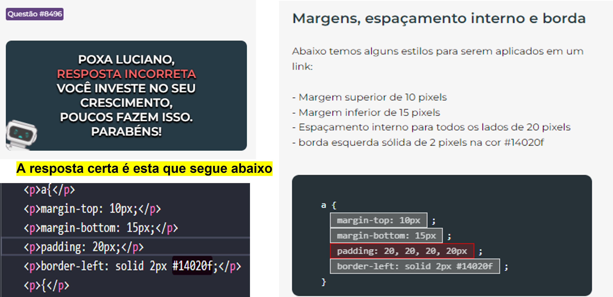

CSS: Propriedades -
Questão|8496
Margens, espaçamento interno e borda
Abaixo temos alguns estilos para serem aplicados em um link:
Margem superior de 10 pixels
Margem inferior de 15 pixels
Espaçamento interno para todos os lados de 20 pixels
borda esquerda sólida de 2 pixels na cor #14020f
a{
margin-top: 10px;
margin-bottom: 15px;
padding: 20px;
border-left: solid 2px #14020f;
{
